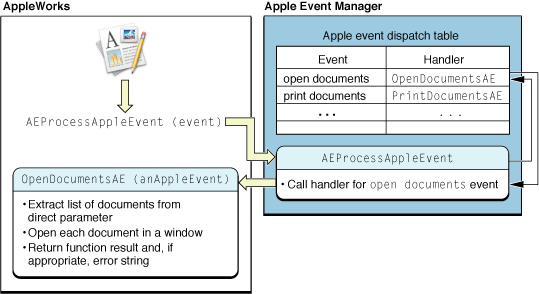

Apple Event Dispatching
This chapter shows how your application works with the Apple Event Manager to register the Apple events it supports and dispatch those events to the appropriate Apple event handlers. An Apple event handler is an application-defined function that extracts pertinent data from an Apple event, performs the requested action, returns a result code, and if necessary, returns information in a reply Apple event.
Note: For information on how Apple events are dispatched in Cocoa applications, see How Cocoa Applications Handle Apple Events in Cocoa Scripting Guide.
In this section:
How Apple Event Dispatching Works
Dispatching Apple Events in Your Application
How Apple Event Dispatching Works
Apple event dispatching works by a simple process:
Your application registers Apple event handler functions with the Apple Event Manager for all the types of Apple events it can work with. A handler may handle just one type of Apple event or multiple types.
The Apple Event Manager creates an Apple event dispatch table for your application. A dispatch table maps the Apple events your application supports to the Apple event handlers it provides.
When your application receives an Apple event, it calls an Apple Event Manager function to process the event. If your dispatch table contains an entry for the event, the Apple Event Manager calls the associated handler.
Note: For your application to respond to Apple events sent from remote computers, a user must open System Preferences, go to Sharing preferences, and select Remote Apple Events in the Services pane.
Dispatch Tables
You build an Apple event dispatch table by making calls to the function AEInstallEventHandler to register (or install) the events your application can handle and the functions that handle them. An Apple event is uniquely identified by the four-character codes specified by its event class and event ID attributes (described in “Event Class and Event ID”). These codes are the values your application uses to register event handler functions with the Apple Event Manager, and they are the values stored in the dispatch table. For example, a delete Apple event has an event class value of 'core' (represented by the constant kAECoreSuite) and an event ID value of 'delo' (kAEDelete).
When you install a handler function for an Apple event, you provide the following information:
The event class and event ID of the Apple event; you can also specify wildcard values to register a handler for more than one event class or event ID.
An optional reference constant for passing additional information to the event handler.
A Boolean value indicating whether the handler should be installed in the application dispatch table or the system dispatch table (you typically install handlers in the application dispatch table).
If you install a handler and there is already an entry in the dispatch table for the same event class and event ID, the entry is replaced. You can also specifically remove a handler with the function AERemoveEventHandler or get a handler (if it is present) with the function AEGetEventHandler.
An Apple event handler should return the value errAEEventNotHandled if it does not handle an event that is dispatched to it but wants to allow the event to be redispatched to another handler, if one is available.
You have several options in how you install event handlers:
You can individually register, by event class and event ID, each of the Apple events that your application supports.
If you provide a separate event handler for each event, each handler will always knows exactly which type of event was dispatched to it.
If you provide the same handler for more than one event, a handler will need to do some work to determine which event it has received.
For example, you might supply a different refcon value for each registered event type so that the event handler can examine its refcon parameter to determine how to respond.
Or you might have your handler examine the event ID attribute of the passed Apple event (which requires an additional call to an Apple Event Manager function).
You can use the
typeWildCardconstant for either the event class or the event ID (or for both), allowing multiple Apple events to be dispatched to a single handler, while minimizing the number of calls toAEInstallEventHandler. A handler can then examine the actual event class or event ID attribute of a received event to determine how to respond.
There are several reasons why you might choose to use a wildcard handler. For example, early in the development process, you may want to combine many events in one handler, then add (and register) more specific handlers at a later time. Or your application may support operations on a large number of objects that are nearly identical—rather than install many handlers that duplicate some of their code, you may prefer to install a wildcard handler.
If an Apple event dispatch table contains one entry for an event class and a specific event ID, and another that is identical except that it specifies a wildcard value for the event class or event ID, the Apple Event Manager dispatches to the more specific entry. For example, suppose the dispatch table includes one entry with event class kAECoreSuite and event ID kAEDelete, and another with event class kAECoreSuite and event ID typeWildCard. If the application receives a delete Apple event, it is dispatched to the handler function associated with the event ID kAEDelete.
The System Dispatch Table
When you call AEInstallEventHandler, you have the option of installing an Apple event handler in the application dispatch table or in the system dispatch table. When an event is dispatched, the Apple Event Manager checks first for a matching handler in the application dispatch table, then in the system dispatch table.
In Mac OS X, you should generally install all handlers in the application dispatch table. For Carbon applications running in Mac OS 8 or Mac OS 9, a handler in the system dispatch table could reside in the system heap, where it would be available to other applications. However, this won’t work in Mac OS X.
Warning: If your application installs a handler in the system heap in Mac OS 8 or Mac OS 9, then quits or crashes without uninstalling the handler, the system is likely to crash the next time another application tries to call that handler.
Dispatching Apple Events in Your Application
To dispatch Apple events in your application, you perform the following steps:
Determine which Apple events your application will respond to and write event handler functions for those events.
Call the Apple Event Manager function
AEInstallEventHandlerto install your handlers.Make sure your application processes Apple events correctly so that they are dispatched to the appropriate handler.
The process for this step varies depending on how your application handles events in general.
These steps are described in the following sections.
Determining Which Apple Events to Respond To
All applications that present a graphical user interface through the Human Interface Toolbox should respond to certain events sent by the Mac OS, such as the open application, open documents, and quit events. These are described in “Handling Apple Events Sent by the Mac OS.” These events can also be sent by other applications.
Your application also responds to any Apple events it has specified for working with its commands and data. To handle Apple events that your application defines, it registers handlers for the event class and event ID values you have chosen for those events. As noted, you can register wildcard values to dispatch multiple events to one or more common handlers.
Installing Apple Event Handlers
Listing 3-1 shows how your application calls AEInstallEventHandler to install an Apple event handler function. The listing assumes that you have defined the function InstallMacOSEventHandlers to install handlers for Apple events that are sent by the Mac OS—that function is shown in Listing 5-6.
Listing 3-1 also assumes you have defined the functions HandleGraphicAE and HandleSpecialGraphicAE to handle Apple events that operate on graphic objects used by your application. That function is not shown, but other event handlers are described in “Responding to Apple Events.”
Listing 3-1 Installing event handlers for various Apple events
static OSErr InstallAppleEventHandlers(void) |
{ |
OSErr err; |
err = InstallMacOSEventHandlers(); |
require_noerr(err, CantInstallAppleEventHandler); |
err = AEInstallEventHandler(kMyGraphicEventClass, kSpecialID, |
NewAEEventHandlerUPP(HandleSpecialGraphicAE), 0, false);// 1 |
require_noerr(err, CantInstallAppleEventHandler); |
err = AEInstallEventHandler(kMyGraphicEventClass, typeWildCard, |
NewAEEventHandlerUPP(HandleGraphicAE), 0, false);// 2 |
require_noerr(err, CantInstallAppleEventHandler); |
CantInstallAppleEventHandler: |
return err; |
} |
In Listing 3-1, the application-defined function InstallAppleEventHandlers uses the macro require_noerr (defined in AssertMacros.h) to check the return value of each function. If an error occurs, it jumps to an error label. The function always returns an error value, which can be noErr if no error occurred.
The following descriptions apply to the numbered lines in Listing 3-1:
The application-defined function
HandleSpecialGraphicAEhandles Apple events that deal with one specific type of graphic object supported by the application, identified by the event classkMyGraphicEventClassand event IDkSpecialID.The application-defined function
HandleGraphicAEhandles Apple events that deal with the application’s other graphic objects. It is installed with an event ID oftypeWildCard, an Apple Event Manager constant that matches any event ID. As a result, theHandleGraphicAEfunction will be called to handle any received Apple event with event classkMyGraphicEventClass, except those with the event IDkSpecialID.
Both of the numbered calls to AEInstallEventHandler provide the event class, event ID, and address of an Apple event handler. The NewAEEventHandlerUPP function creates a universal procedure pointer to a handler function. The value of 0 passed for the reference constant indicates the application does not need to pass additional information to the event handler function.
Each call to AEInstallEventHandler also passes a Boolean value of false, indicating the handler should be installed in the application dispatch table, not the system dispatch table.
Processing Apple Events
How your application processes Apple events depends on how it processes events in general—whether it uses the modern Carbon event model (described in Carbon Event Manager Programming Guide), or relies on the older WaitNextEvent function. In either case, your application receives events from the operating system, some of which represent Apple events. The application dispatches these events to its Apple event handlers by calling the Apple Event Manager function AEProcessAppleEvent.
Figure 3-1 provides a conceptual view of the dispatching mechanism. It shows the flow of control between the AppleWorks application and the Apple Event Manager when the application receives an open documents event and calls AEProcessAppleEvent.
Figure 3-1 An application working with the Apple Event Manager to dispatch an open documents Apple event
The AEProcessAppleEvent function takes an event of type EventRecord and looks up the Apple event it refers to in the application’s dispatch table. If it finds a handler function for the Apple event, it calls the function, passing the Apple event.
The following sections describe in detail how an application calls the AEProcessAppleEvent function.
Processing Apple Events With the Carbon Event Model
An application that uses the Carbon event model receives each Apple event as a Carbon event of type {kEventClassAppleEvent, kEventAppleEvent}. For applications that call the RunApplicationEventLoop function to process Carbon events, the AEProcessAppleEvent function is called automatically, and dispatches received Apple events as shown in Figure 3-1.
Applications that use the Carbon event model but do not call RunApplicationEventLoop must install a Carbon event handler to process Apple events. Listing 3-2 shows how you might install such a handler—in this case, named AEHandler.
Listing 3-2 Installing a Carbon event handler to handle Apple events
const EventTypeSpec kEvents[] = {{kEventClassAppleEvent, kEventAppleEvent}}; |
InstallApplicationEventHandler(NewEventHandlerUPP(AEHandler), |
GetEventTypeCount(kEvents), kEvents, 0, NULL); |
Your Carbon event handler for Apple events must perform these steps:
Remove the Carbon event of type
{kEventClassAppleEvent, kEventAppleEvent}from the event queue before dispatching the Apple Event inside it.The process of removing the event from the queue triggers a synchronization with the Apple Event Manager that allows the next call to
AEProcessAppleEventto dispatch the Apple event properly. If the handler doesn’t remove the Carbon event from the queue, the application will end up dispatching the wrong Apple event.Call
ConvertEventRefToEventRecordto get anEventRecordto pass toAEProcessAppleEvent.Call
AEProcessAppleEvent.Return
noErrto indicate the Carbon event has been handled (which does not depend on whether the dispatched Apple event is handled by the application).
Listing 3-3 shows a version of the AEHandler function.
Listing 3-3 A handler for a Carbon event that represents an Apple event
OSStatus AEHandler(EventHandlerCallRef inCaller, EventRef inEvent, void* inRefcon) |
{ |
Boolean release = false; |
EventRecord eventRecord; |
OSErr ignoreErrForThisSample; |
// Events of type kEventAppleEvent must be removed from the queue |
// before being passed to AEProcessAppleEvent. |
if (IsEventInQueue(GetMainEventQueue(), inEvent)) |
{ |
// RemoveEventFromQueue will release the event, which will |
// destroy it if we don't retain it first. |
RetainEvent(inEvent); |
release = true; |
RemoveEventFromQueue(GetMainEventQueue(), inEvent); |
} |
// Convert the event ref to the type AEProcessAppleEvent expects. |
ConvertEventRefToEventRecord(inEvent, &eventRecord); |
ignoreErrForThisSample = AEProcessAppleEvent(&eventRecord); |
if (release) |
ReleaseEvent(inEvent); |
// This Carbon event has been handled, even if no AppleEvent handlers |
// were installed for the Apple event. |
return noErr; |
} |
If your application has not installed a handler for a received Apple event, the event may be handled by a handler installed by the system. For example, if your application calls RunApplicationEventLoop, a simple quit application handler is installed automatically. But if you call AEProcessAppleEvent for an event for which there is no handler installed, the event is ignored.
Processing Apple Events With WaitNextEvent
A Carbon application that uses the WaitNextEvent function, rather than the Carbon event model, receives an Apple event in its event loop as a standard event record (type EventRecord), identified by the constant kHighLevelEvent. The application passes these events to AEProcessAppleEvent, as shown in the following code listings.
Listing 3-4 shows a simplified main event loop function which continually loops, getting events and calling the HandleEvent function (in Listing 3-5) to process them.
Listing 3-4 A main event loop
static void MainEventLoop() |
{ |
RgnHandle cursorRgn; |
Boolean gotEvent; |
EventRecord event; |
cursorRgn = NULL; |
while(!gQuit) |
{ |
gotEvent = WaitNextEvent(everyEvent, &event, 32767L, cursorRgn); |
if (gotEvent) |
{ |
HandleEvent(&event); |
} |
} |
} |
Listing 3-5 shows a standard approach for processing event records. When the value in the what field of the event record is kHighLevelEvent, the function calls AEProcessAppleEvent, which dispatches the event as shown in Figure 3-1.
Listing 3-5 A function that processes Apple events
static void HandleEvent(EventRecord *event) |
{ |
switch (event->what) |
{ |
case mouseDown: |
HandleMouseDown(event); |
break; |
case keyDown: |
case autoKey: |
HandleKeyPress(event); |
break; |
case kHighLevelEvent: |
AEProcessAppleEvent(event); |
break; |
} |
} |
Listing 3-4 and Listing 3-5 are based on functions in the Xcode project AppearanceSample, located in /Developer/Examples/Carbon.
© 2005, 2007 Apple Inc. All Rights Reserved. (Last updated: 2007-10-31)